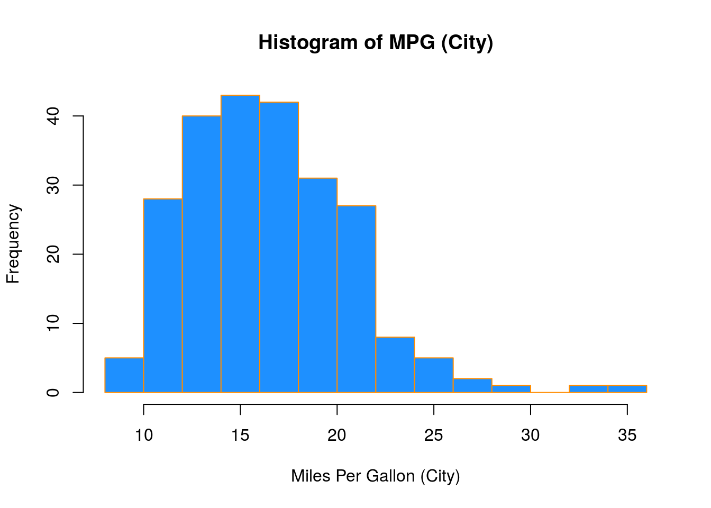
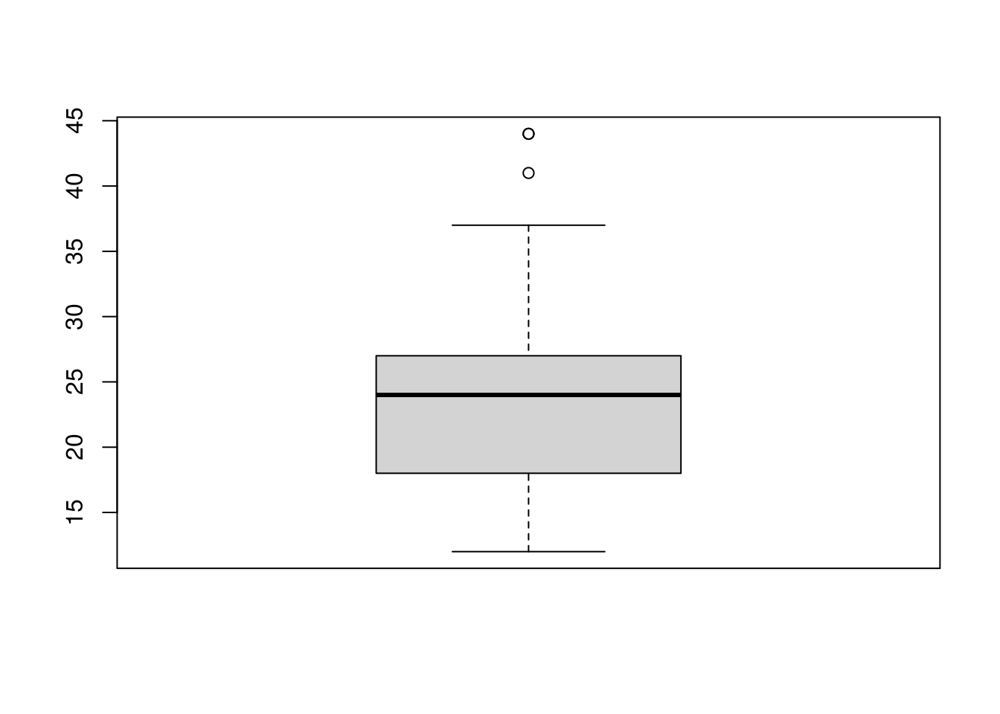

R has built in functions for a large number of summary statistics. For numeric variables, we can summarize data with the center and spread. We’ll again look at the mpg dataset from the ggplot2 package.
| Measure | R |
Result |
|---|---|---|
| Mean | mean(mpg$cty) |
16.8589744 |
| Median | median(mpg$cty) |
17 |
| Measure | R |
Result |
|---|---|---|
| Variance | var(mpg$cty) |
18.1130736 |
| Standard Deviation | sd(mpg$cty) |
4.2559457 |
| IQR | IQR(mpg$cty) |
5 |
| Minimum | min(mpg$cty) |
9 |
| Maximum | max(mpg$cty) |
35 |
| Range | range(mpg$cty) |
9, 35 |
Now that we have some data to work with, and we have learned about the data at the most basic level, our next tasks is to visualize the data. Often, a proper visualization can illuminate features of the data that can inform further analysis.
We will look at four methods of visualizing data that we will use throughout the course:
When visualizing a single numerical variable, a histogram will be our go-to tool, which can be created in R using the hist() function.
The histogram function has a number of parameters which can be changed to make our plot look much nicer. Use the ? operator to read the documentation for the hist() to see a full list of these parameters.
hist(mpg$cty,
xlab = "Miles Per Gallon (City)",
main = "Histogram of MPG (City)",
breaks = 12,
col = "dodgerblue",
border = "darkorange")
Importantly, you should always be sure to label your axes and give the plot a title. The argument breaks is specific to hist(). Entering an integer will give a suggestion to R for how many bars to use for the histogram. By default R will attempt to intelligently guess a good number of breaks, but as we can see here, it is sometimes useful to modify this yourself.
Somewhat similar to a histogram, a barplot can provide a visual summary of a categorical variable, or a numeric variable with a finite number of values, like a ranking from 1 to 10.
To visualize the relationship between a numerical and categorical variable, we will use a boxplot. In the mpg dataset, the drv variable takes a small, finite number of values. A car can only be front wheel drive, 4 wheel drive, or rear wheel drive.
## [1] "f" "4" "r"First note that we can use a single boxplot as an alternative to a histogram for visualizing a single numerical variable. To do so in R, we use the boxplot() function.

However, more often we will use boxplots to compare a numerical variable for different values of a categorical variable.
Here we used the boxplot() command to create side-by-side boxplots. However, since we are now dealing with two variables, the syntax has changed. The R syntax hwy ~ drv, data = mpg reads “Plot the hwy variable against the drv variable using the dataset mpg.” We see the use of a ~ (which specifies a formula) and also a data = argument. This will be a syntax that is common to many functions we will use in this course.
boxplot(hwy ~ drv, data = mpg,
xlab = "Drivetrain (f = FWD, r = RWD, 4 = 4WD)",
ylab = "Miles Per Gallon (Highway)",
main = "MPG (Highway) vs Drivetrain",
pch = 20,
cex = 2,
col = "darkorange",
border = "dodgerblue")Again, boxplot() has a number of additional arguments which have the ability to make our plot more visually appealing.
Lastly, to visualize the relationship between two numeric variables we will use a scatterplot. This can be done with the plot() function and the ~ syntax we just used with a boxplot. (The function plot() can also be used more generally; see the documentation for details.)